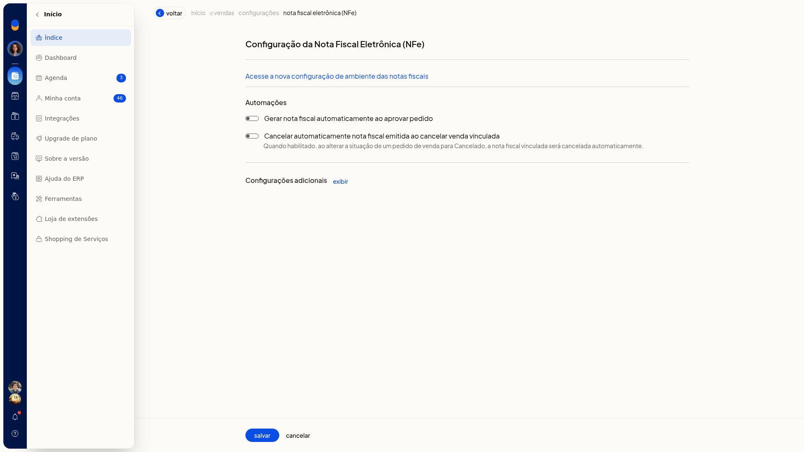
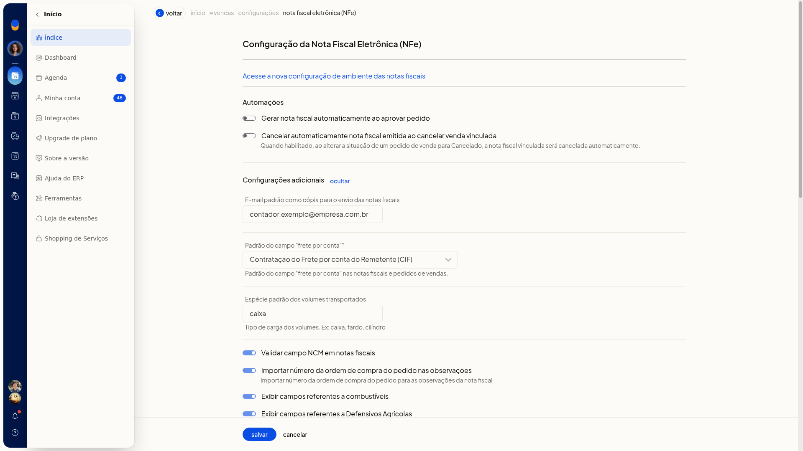
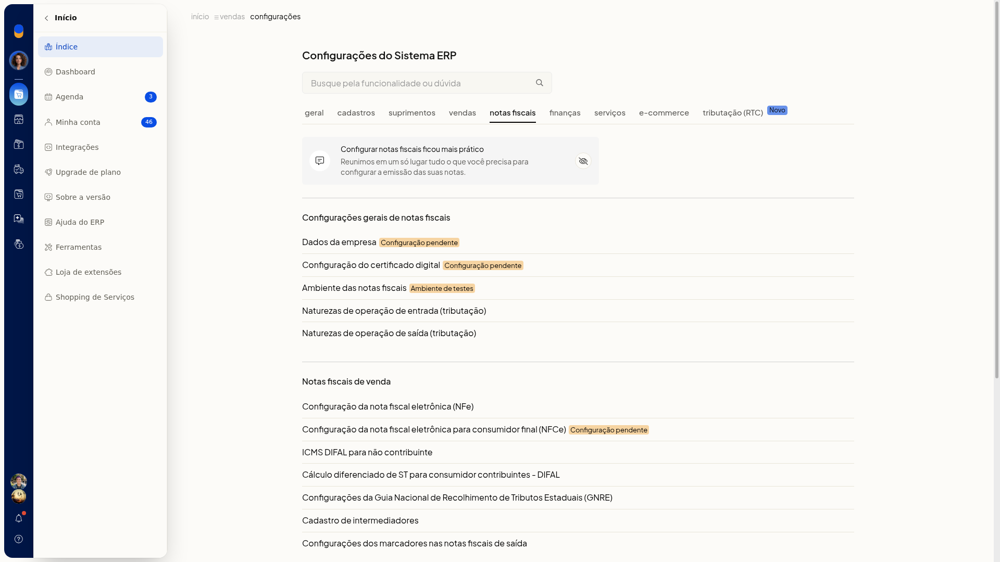
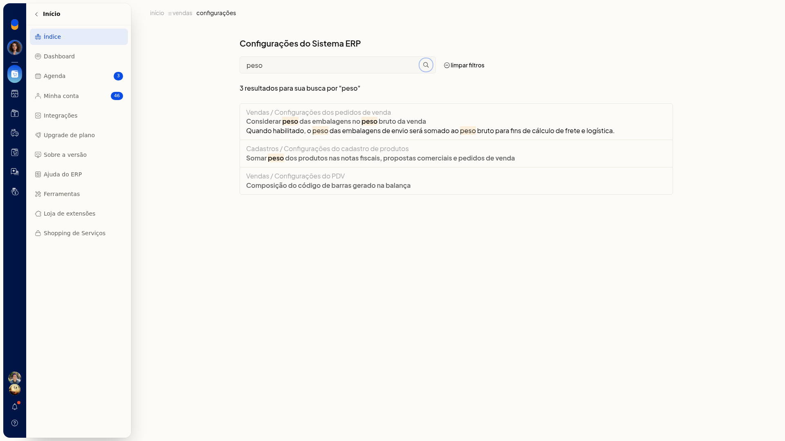
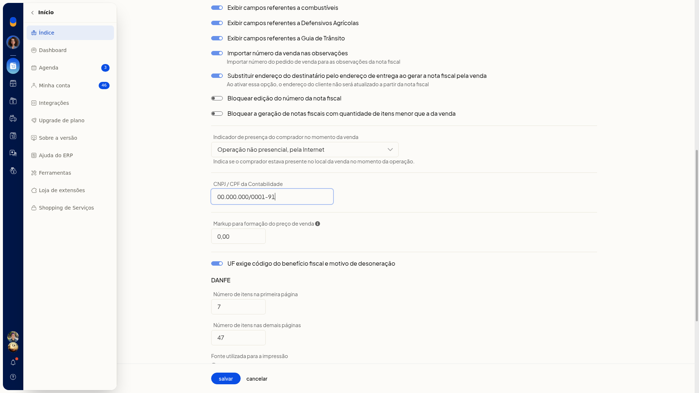
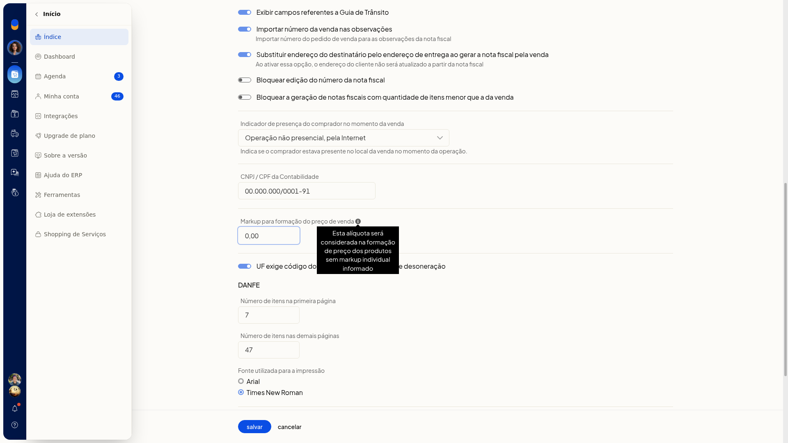

Configuração da NF-e: automações e configurações adicionais
Na tela Configuração da nota fiscal eletrônica (NFe) do ERP da Olist, você define as automações ligadas ao pedido e os dados complementares da NF-e: frete, volumes, observações, presença do comprador e contabilidade.
Com isso, você escolhe se a nota é gerada ao aprovar o pedido, se a nota emitida é cancelada junto com a venda e quais desses dados entram na nota.
Pré-requisitos
- A empresa precisa ter o módulo de nota fiscal eletrônica.
- Se a opção não aparecer para você, peça acesso ao administrador da conta.
Importante
- Nenhum campo desta tela é obrigatório.
- O cancelamento automático só ocorre quando a situação do pedido de venda passa para Cancelado e existe nota vinculada.
- Com a substituição pelo endereço de entrega, o endereço do cliente não é atualizado a partir da nota.
- O padrão de frete por conta vale para as notas fiscais e para os pedidos de venda.
- Bloquear a geração de notas fiscais com quantidade de itens menor que a da venda só aparece se a empresa não tiver o módulo de faturar pedidos agrupadamente.
Instruções
-
Acesse Configurações > Configurações ERP > Notas Fiscais > Configuração da nota fiscal eletrônica (NFe).
-
Em Automações, ligue ou desligue Gerar nota fiscal automaticamente ao aprovar pedido e Cancelar automaticamente nota fiscal emitida ao cancelar venda vinculada.

-
Em Configurações adicionais, clique em exibir. O link passa a ocultar e os campos ficam visíveis.


-
Ajuste os campos que você quer usar.

Envio, frete e volumes
- E-mail padrão como cópia para o envio das notas fiscais: digite um email.
- Padrão do campo "frete por conta": selecione uma opção:
- Contratação do Frete por conta do Remetente (CIF)
- Contratação do Frete por conta do Destinatário (FOB)
- Contratação do Frete por conta de Terceiros
- Transporte Próprio por conta do Remetente
- Transporte Próprio por conta do Destinatário
- Sem Ocorrência de Transporte
- Espécie padrão dos volumes transportados: digite o tipo de carga, como caixa ou fardo.

Observações e campos da nota
- Validar campo NCM em notas fiscais
- Importar número da ordem de compra do pedido nas observações: importa o número da ordem de compra do pedido para as observações da nota fiscal.
- Importar número da venda nas observações: importa o número do pedido de venda para as observações da nota fiscal.
- Exibir campos referentes a combustíveis
- Exibir campos referentes a Defensivos Agrícolas
- Exibir campos referentes a Guia de Trânsito
- Substituir endereço do destinatário pelo endereço de entrega ao gerar a nota fiscal pela venda
Bloqueios, presença e contabilidade
- Bloquear edição do número da nota fiscal
- Bloquear a geração de notas fiscais com quantidade de itens menor que a da venda
- Indicador de presença do comprador no momento da venda: indica se o comprador estava presente no local da venda. Selecione uma opção:
- Não se aplica (por exemplo, Nota Fiscal complementar ou de ajuste)
- Operação presencial
- Operação não presencial, pela Internet
- Operação não presencial, Teleatendimento
- Operação presencial, fora do estabelecimento
- Operação não presencial, outros

- CNPJ / CPF da Contabilidade: digite o CNPJ ou o CPF.

- Markup para formação do preço de venda: digite o valor com vírgula. O ícone ao lado informa que a alíquota é usada quando o produto não tem markup individual.

- UF exige código do benefício fiscal e motivo de desoneração
- Clique em Salvar, no fim da tela, para gravar as automações e as configurações adicionais.